Oil Pump: Service and Repair
Oil Pump OverhaulOil Pump:
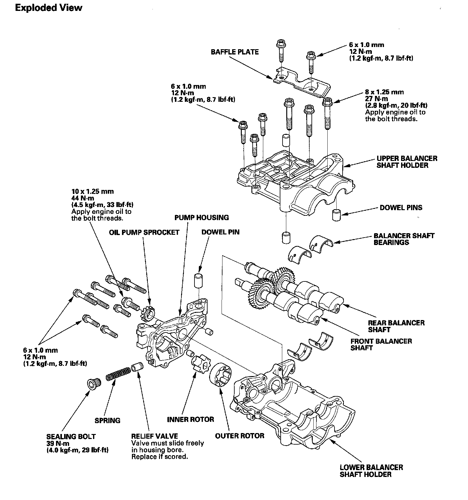
Oil Pump Removal
1. Turn the crankshaft pulley so its top dead center (TDC) mark (A) lines up with the pointer (B).
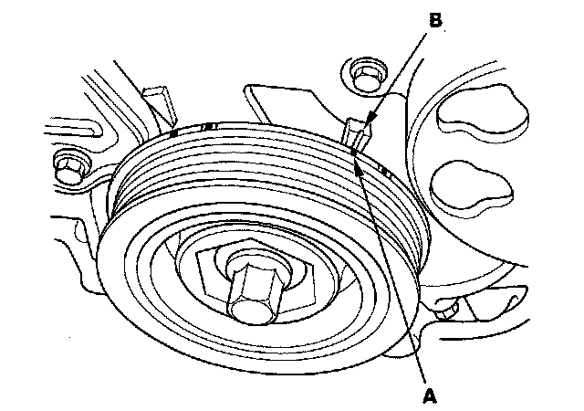
2. Remove the oil pan.
3. Remove and discard the oil pump chain tensioner.
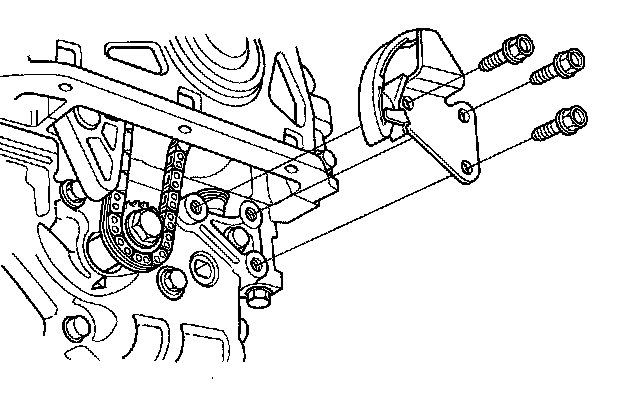
4. To hold the rear balancer shaft, insert a 6 mm pin driver (A) into the maintenance hole in the lower balancer shaft holder and through the rear balancer shaft.
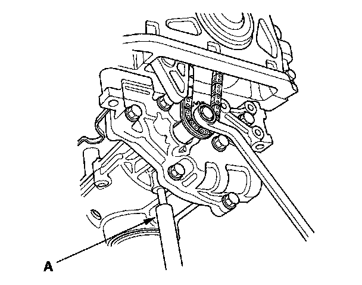
5. Loosen the oil pump sprocket mounting bolt.
6. Remove the oil pump sprocket (A), then remove the oil pump (B).
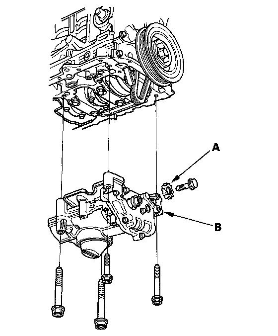
Oil Pump Inspection
1. Remove the pump housing.
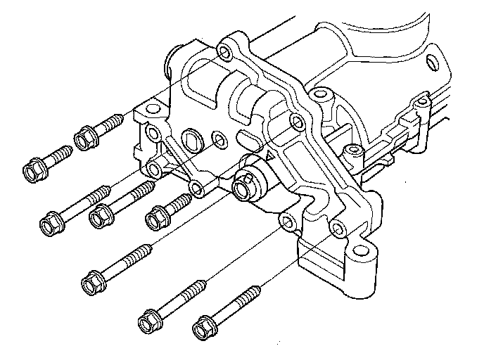
2. Check the inner-to-outer rotor radial clearance between the inner rotor (A) and outer rotor (B). If the inner-to-outer rotor radial clearance exceeds the service limit, replace the oil pump.
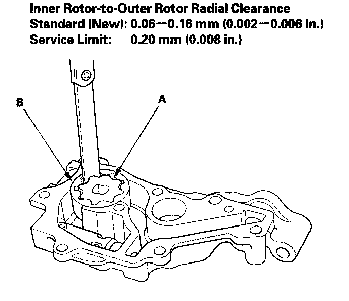
3. Check the housing-to-rotor axial clearance between the rotor (A) and pump housing (B). If the housing-to-rotor axial clearance exceeds the service limit, replace the oil pump.
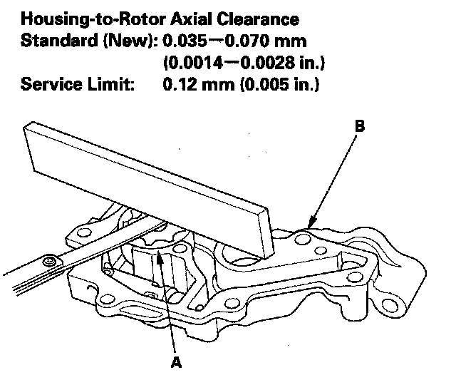
4. Check the housing-to-outer rotor radial clearance between the outer rotor (A) and pump housing (B). If the housing-to-outer rotor radial clearance exceeds the service limit, replace the oil pump.
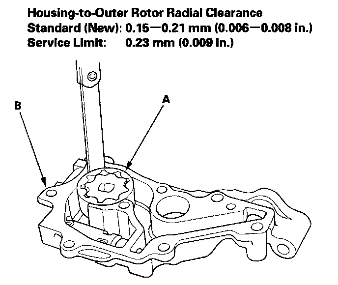
5. Inspect both rotors and the pump housing for scoring or other damage. Replace parts if necessary.
Balancer Shaft Inspection
1. Seat the balancer shaft by pushing it away from the oil pump sprocket end of the oil pump.
2. Zero the dial indicator against the end of the balancer shaft, then push the balancer shaft back and forth and read the end play.
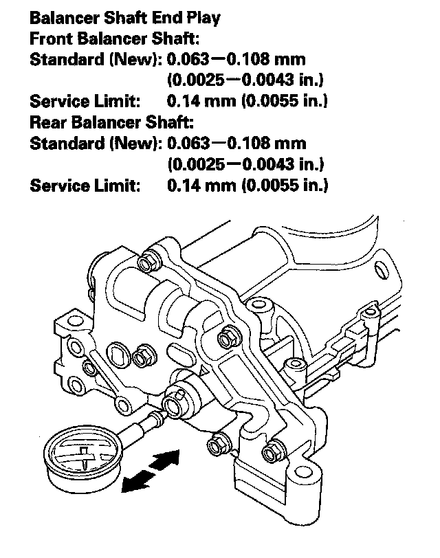
3. Remove the baffle plate (A) and upper balancer shaft holder (with bearings) (B), then remove the front balancer shaft (C) and rear balancer shaft (D).
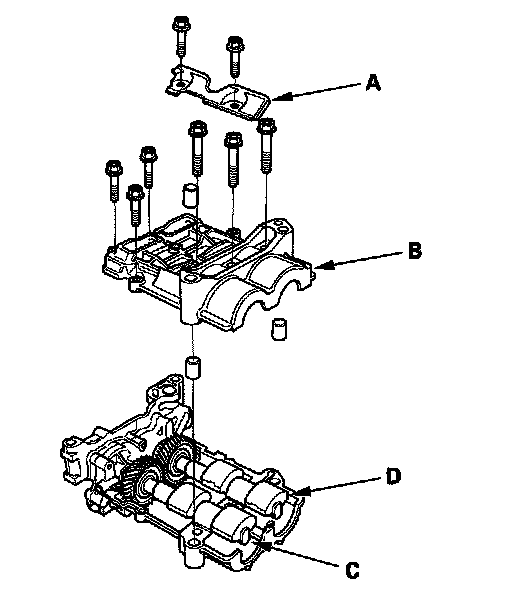
4. Measure the inner diameter of the No. 1 bearing for the front balancer shaft hole and the rear balancer shaft hole.
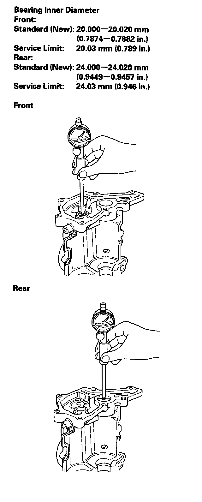
5. Measure the diameters of the No. 1 journals on the front balancer shaft and rear balancer shaft.
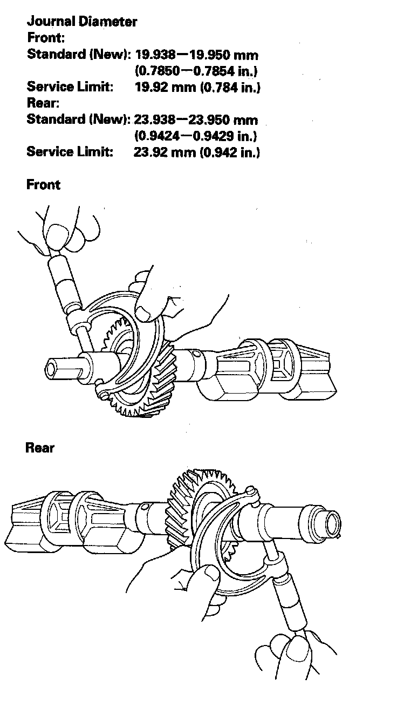
6. Clean both balancer shaft No. 2 journals and bearing halves with a clean shop towel.
7. Place one strip of plastigage across each No. 2 journal.
8. Reinstall the bearings and upper balancer shaft holder, then torque the bolts.
NOTE: Do not rotate the balancer shafts during inspection.
9. Remove the upper balancer shaft holder and bearings again, and measure the widest part with the plastigage. If the balancer shaft No. 2 journal oil clearance is out-of-tolerance, install new bearings, and recheck. If it is still out-of-tolerance, replace the balancer shafts.
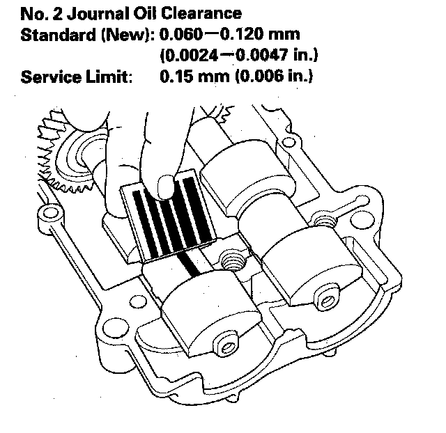
10. Align the punch mark on the rear balancer shaft in the center of the two punch marks on the front balancer shaft, then install the balancer shafts on the lower balancer shaft holder.
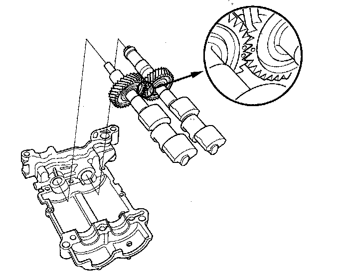
11. Apply engine oil to the threads of the 8 mm bolts (A).
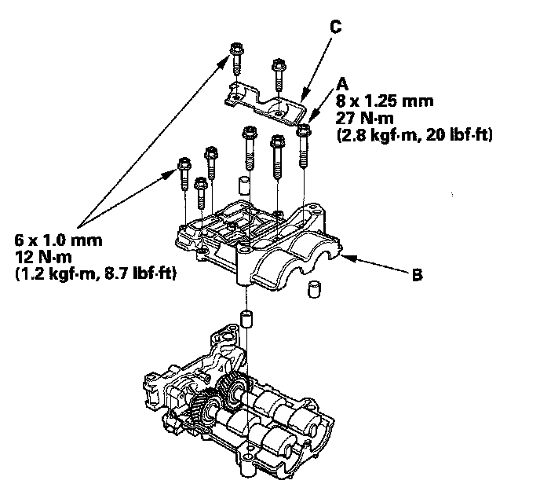
12. Install the upper balancer shaft holder (B) and baffle plate (C).
13. Install the pump housing.
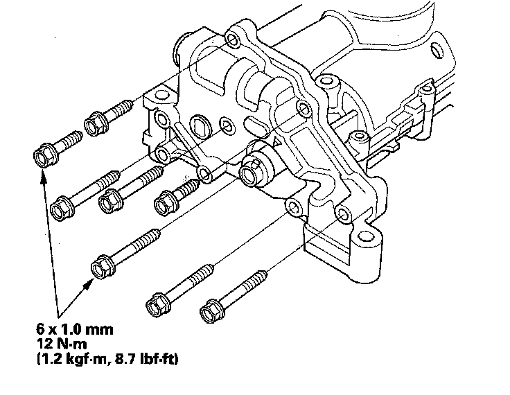
Oil Pump Installation
1. Make sure the No. 1 piston top dead center (TDC) mark (A) lines up with the pointer (B).
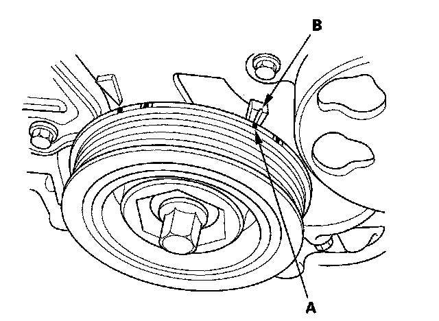
2. Align the dowel pin (A) on the rear balancer shaft with the mark (B) on the oil pump.
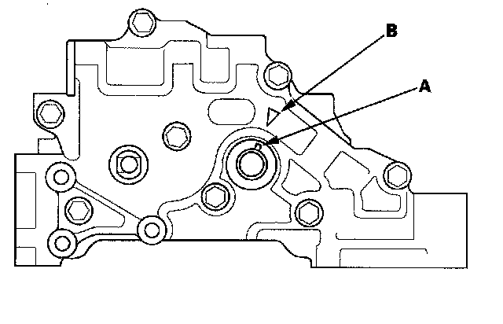
3. To hold the rear balancer shaft, insert a 6 mm pin driver (A) into the maintenance hole in the lower balancer shaft holder and through the rear balancer shaft.
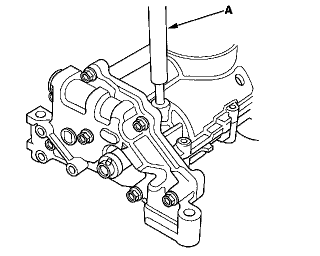
4. Apply engine oil to the threads of the oil pump sprocket mounting bolt (A).
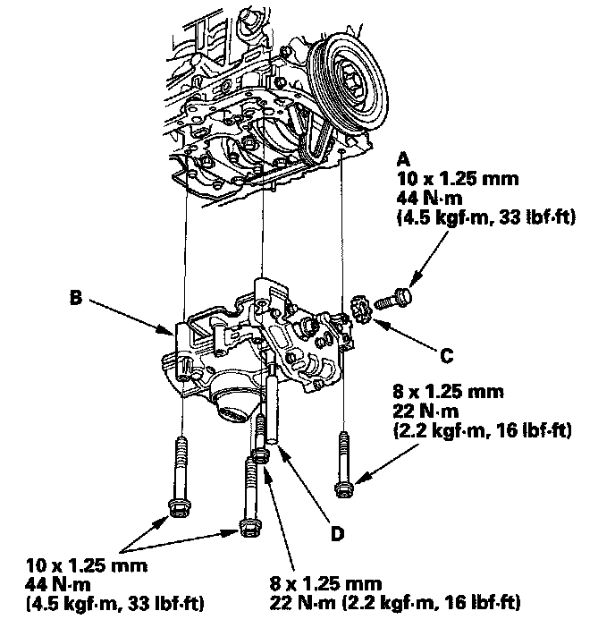
5. Loosely install the oil pump (B), then install the oil pump sprocket (C).
6. Remove the pin driver (D).
7. Tighten the oil pump mounting bolts.
8. Squeeze the new oil pump chain tensioner (A), then install the set clip (B) on it as shown.
NOTE: The set clip is supplied with the oil pump chain tensioner.
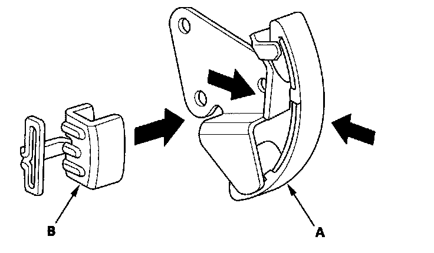
9. Install the new oil pump chain tensioner.
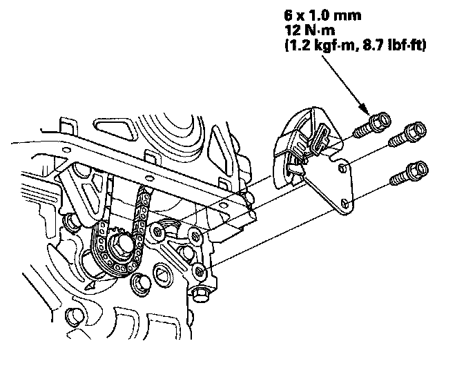
10. Remove the set clip from the oil pump chain tensioner.
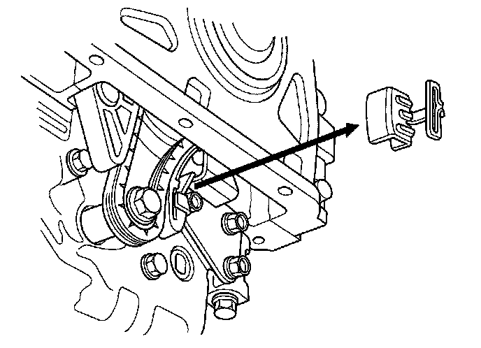
11. Install the oil pan.